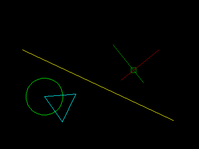

Quick Mirror
This page is delivered for consistency purposes only, as part of the LeeMac sample module of DynALisp, which shows how DynALisp turns existing AutoLISP programs into a module. The program and its description are the work of Lee Mac, who keeps all the credit for them. The original page, with the latest version, is on Lee Mac's website: https://lee-mac.com/quickmirror.html
| Function Syntax | LM-QuickMirror – original syntax: QM / QMD / QMO / QMOD (see aliases) |
| Current Version | 1.0 |
| Compatible with AutoCAD for Mac? | No |
| Compatible with AutoCAD LT? | Yes |
| Original Page | lee-mac.com/quickmirror.html |
Program Description
This program provides functionality to mirror a selection of objects or a single object without the need to pick two points to define a mirror axis.
The program runs using a subfunction which is called with two arguments: 'single' and 'delete'. If the 'single' parameter is non-nil, the user is prompted for a single object to mirror and the object is mirrored in the mirror axis defined by the derivative at the selected edge of the object. If the 'single' parameter is nil, the user is prompted for a SelectionSet of objects to mirror and an object whose derivative at its selected edge will be used as a mirror axis. The 'delete' parameter determines whether the original objects are to be erased following the mirror operation.
I have created four program shortcuts to call the subfunction in various ways, the configuration of each command is detailed at the top of the code.
Example of Usage

Bundled program notes
;;---------------------=={ Quick Mirror }==-------------------;;
;; ;;
;; Provides functionality to mirror a selection of objects ;;
;; or a single object without the need to select two points ;;
;; defining a mirror axis. ;;
;;------------------------------------------------------------;;
;; Author: Lee Mac, Copyright © 2011 - www.lee-mac.com ;;
;;------------------------------------------------------------;;
;; Arguments: ;;
;; single - if T, mirrors selected object using derivative ;;
;; at the selected edge to determine mirror axis, ;;
;; else prompts for selection set and object to use ;;
;; as mirror axis. ;;
;; delete - if T, selected object or selection set is ;;
;; deleted following the mirror operation. ;;
;;------------------------------------------------------------;;
;; Returns: Null. ;;
;;------------------------------------------------------------;;
;; Version 1.0 - 15-02-2011 ;;
;; ;;
;; First Release. ;;
;;------------------------------------------------------------;;
Command Names And Aliases
As in every DynALisp module, each program of this sample module has one main command, named LM-*, and the original command names of Lee Mac's page are kept as its aliases: they run the same command, and can be added, renamed or removed in Dyl-Suite (saved in Resources\Aliases.csv). The rows marked ↳ are child commands of LM-QuickMirror: they are run by their alias, or picked from LM-QuickMirror when it lists them (their command is named Pst-*).
| Command | Aliases | Name |
|---|---|---|
| LM-QuickMirror | QM | Quick Mirror |
| ↳ QMD | – | Quick Mirror Delete |
| ↳ QMO | – | Quick Mirror Object |
| ↳ QMOD | – | Quick Mirror Object Delete |